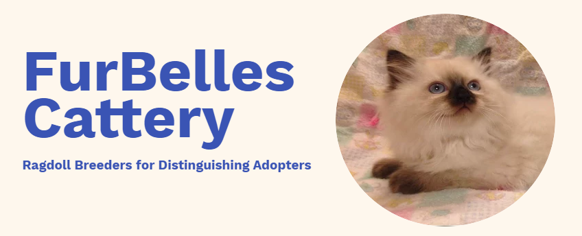
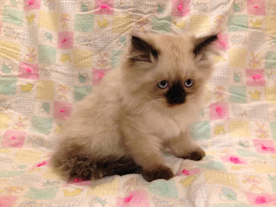

Welcome To Furbelles Cattery!
What is a Ragdoll Cat?
If you're not familiar with the breed, you are in for a treat! Ragdolls are the very finest of the feline world, inspiring limitless joy and fierce devotion in their fortunate owners. Here are some of the distinguishing features of these delightful creatures...
Ragdolls are Affectionate!
Ragdolls are widely considered to be the most affectionate breed of cat in the world. They crave human attention and interaction — they are known to run to greet you at the door, follow you from room to room, flop on you, sleep with you, and generally choose to be where you are.
The Ragdoll is the quintessential lap cat. In fact, the breed name comes from their tendency to becomes very relaxed, and even go limp (like a ragdoll) when held in loving arms.
Ragdolls cats and kittens are sometimes described as “dog-like” cats because they tend to form strong bonds with their owners. Contrary to popular belief, a man’s best friend is actually a Ragdoll cat!
Ragdolls are Gentle Giants
Ragdoll cats are one of the largest breeds of domestic cat. Their peaceful demeanor, combined with their above-average size, has prompted some to call them the ‘gentle giants’ of the feline world.
Ragdolls’ calm, loving personalities, combined with their sturdy physicality, make them ideal pets for small children, the elderly--and practically everyone else!
Ragdolls make excellent therapy animals, and have been used in the treatment of autism, depression, anxiety disorders, and other mental illnesses.
Ragdolls are Smart & Playful
But don’t let their calm demeanor fool you! Ragdolls can be very playful and adventurous, with keen minds always active behind those blue eyes.
The charming antics of Ragdolls kittens are legendary (just ask YouTube!), and the breed is both exceptionally intelligent and eager to please. In fact, Ragdolls cats can be trained to play fetch, walk on a leash, and even come on command.
With so many remarkable qualities, it is small wonder that Ragdoll owners are so fiercely loyal to the breed.
What is FurBelles Cattery?

FurBelles is a home-based Ragdoll cattery that combines the love of a family with the science and skill of good breeding. Our Ragdoll kittens are bred with care in the heart of Amish country in Lancaster, Pennsylvania. With many years of cattery experience, we can offer the finest in breeding and training to our tiny Fur Belles (that's what we call our kittens).
When you adopt a Ragdoll kitten from FurBelles Cattery, you can be sure you are getting a kitten of exceptional quality that will be a life-long friend and an endless source of joy to you and yours!
Our Ragdoll kittens are all exceptionally well socialized by children and other pets, meticulously groomed, and are always pampered! Never held in cages, never declawed, and never wanting for attention.
Breeding parents are screened regularly for FIV, HCM, and feline leukemia. All kittens are sold with age-appropriate vaccinations, and with a lifetime health guarantee against genetic diseases.
How Do I Adopt?
Ready to meet your new Ragdoll? Please contact us at furbelles@gmail.com. We'll respond promptly with information on available kittens and current pricing. If you prefer to text, please include a phone number in your email.